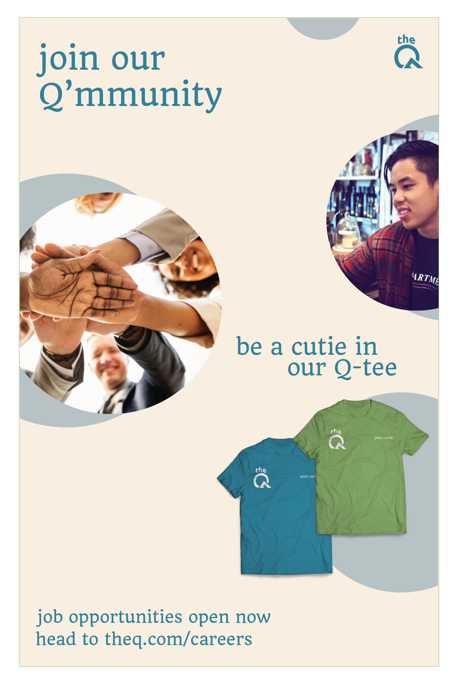
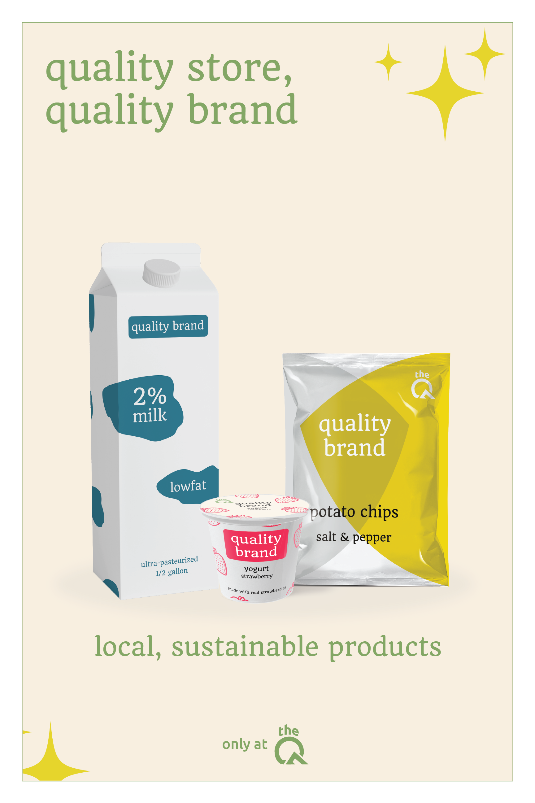
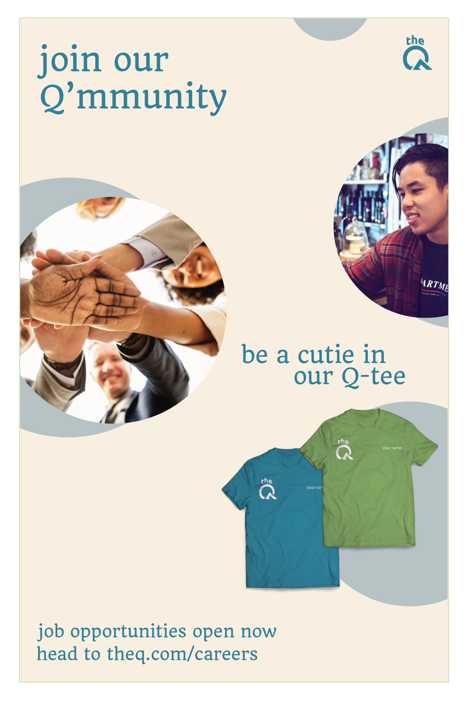
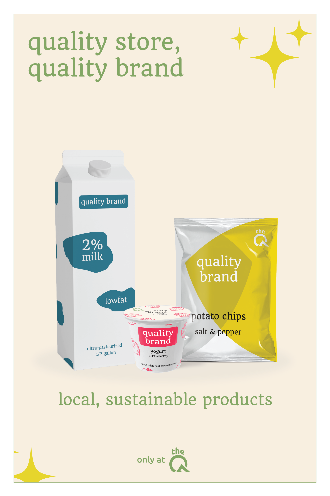
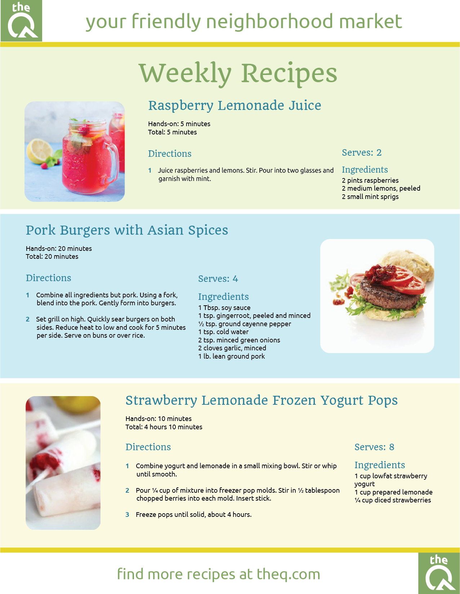

Background
For my visual communication and design final project, I was required to rebrand a company based in Washington, providing a mock-up of:
- a logo
- a website
- a set of posters
- a paper document
I chose to redesign QFC because I wanted to tackle on the challenge of rebranding for a large company. My vision for the QFC rebrand was to make QFC a friendlier and modern grocery store. Please view my work and design process below.

Design Process
Research | Two Days
My QFC rebrand started with research. I researched the current QFC brand as well as competing grocery stores such as Target, Walmart, and Albertson's. I also looked for different inspirations and concepts. The purpose of my research was to determine the current design trends and patterns of grocery markets as well as come up with a direction I want to take the QFC brand. During this research phase of two days, I brainstormed different concepts for my redesigns ranging from nostalgic to modern. Ultimately, I decided on rebranding to 'The Q' when I found a King5 article where the president of QFC stated that QFC may rebrand to 'The Q'. This article gave me inspiration that QFC wanted to become more attractive and modern for customers, which led to my goal of redesigning QFC as friendly and modern.
Identity | One Day
After conducting research, I started by first coming up with a brand identity. My thinking was not for a subtle QFC rebrand but a radical change into a friendly and modern grocery store. Looking at the competing grocery stores such as Walmart and Target who have evolved to become bigger and futuristic brands made me want to do the same for QFC. Many of the newer large stores have cemented their identity through their branding. Target's remodeling a couple years again moved people's perception of Target to be a store that is higher quality than its competitor, Walmart who is known for being the cheapest. My focus was friendly and modern. I wanted the rebranded QFC to be in the likes of Whole Foods, since QFC focuses more on groceries. My goal was to make QFC have a clean aesthetic to draw in customers so I committed to moving forward with minimalist, colorful designs. I also wanted a brand that was versatile like the recent rebranding of the Juventus soccer team. Having a versatile brand language would allow the company to advertise and market in more ways.

Logo | Three Days
My first piece was the logo because I feel that a logo is the most essential piece of a new brand identity. Looking back at the old QFC logo, the blue and yellow contrasting colors were not friendly and having the words "Quality Food Center" under the "QFC" made it seem like the logo needed clarification. For my redesigned logo, I paid tribute to QFC by combining the blue and yellow hues of the old logo into a friendly green and using 'the' as a crown like the old logo. I also paid tribute to Washington by creating the image of a sun over a mountain for Mt. Rainier with the 'Q'.

Website
Redoing the QFC website was difficult because there was not a lot to use from the current QFC's website. The current QFC website is very uniform and bland. Because QFC is owned by Kroger, the QFC website was identical to Fred Meyer's and all other Kroger project stores' websites. Since my project was near the end of spring, the QFC website was advertising summer sales and deals. I chose vibrant colors and images to create a summer feel. The website layout was designed to be easily navigated. My font for the websites were chosen for their readability and welcoming nature.

Poster
The constraints for the posters were that they had to be 24x36 inches and had to include 3 different products the company had. I decided to create a set of posters that would be posted on the walls of the Q, each with a different 'product'. Since it was hard for me to narrow down three signature QFC products (due to QFC being a large grocery store), I addressed unique QFC elements with a rewards card poster, employment poster, and signature brand poster. For these posters, I wanted to draw customers from far away by having large centerpiece focal points with each poster. I used a light background with a white border to make the poster more friendly than a dark poster.
 



Document
The document needed to be an 8.5x11 inch document showing various levels of hierarchy. For this, I created a recipe flyer for customers to grab inside the stores. My rationale for this recipe flyer sheet was that it needed to be easily understood as well as eye-drawing so customers would pick it up while shopping. I used muted colors in the background to draw customers eyes and made sure that the recipe flyer was easily skimmable to draw customers' attention to the actual recipes.
